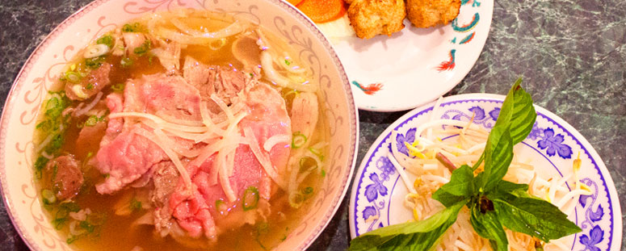

Promo
promoImage
About Us
Creator Info
Lan K Le
Hi, my name is Lan K. Le
Information
I’m a Vietnamese guy, I have spent my entire life living in Vietnam and eating Vietnamese food.
I’m literrally craving for Vietnamese cuisine.
The tastes of them are so unique and also so attractive by looking at. Bun Bo is always my cup of tea, it is not as famous as Pho but the soup is just so stand-out and irreplaceable.
The reason why me and my friend created this website is that we want more people can know about how awesome Vietnamese food is.
David J Allin
Hi, my name is David J. Allin
Information
Vietnamese food has always been my favorite food to eat out.
From Pho to rice, I love it all. My favorite dish is Pho, which is the first Vietnamese dish I’ve ever eaten.
My friend Lan came up with the idea of this website and I was completely blown away. I thought that was an amazing idea. We would be making a website to inform people about the wonderful and delicious Vietnamese cuisine. To be able to share our experiences with people around the world was something I had wanted to do.